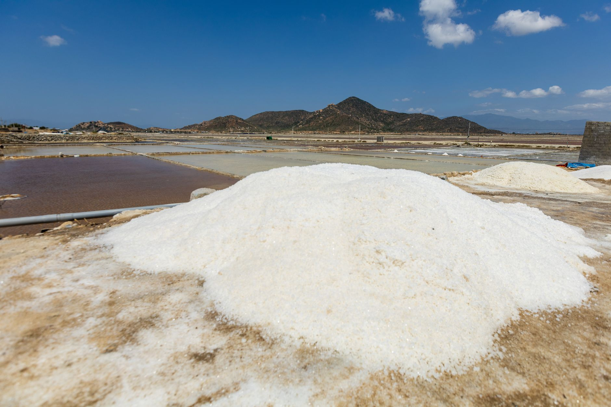

남미 광물 없이 AI 반도체 못 만든다

남미는 전 세계 리튬 매장량의 약 58%(칠레·아르헨티나·볼리비아 리튬 트라이앵글)를 보유하며, 코발트 핵심 정제 원료의 우회 조달 거점으로도 부상하고 있다. 2024년 기준 칠레 리튬 수출액은 약 74억 달러로 전년 대비 42% 감소했지만, 물량 자체는 글로벌 수요 회복에 따라 재증가 국면에 진입 중이다.
브라질은 희토류 매장량 세계 2위(약 2,100만 톤 추정)이지만 정제·분리 인프라가 미비해 원광 수출에 머물고 있다. AI 데이터센터·전력반도체 핵심 소재인 네오디뮴·프라세오디뮴을 브라질에서 조달하려면 별도 정제 파트너십 없이는 사실상 불가능한 구조다.
한국은 2024년 기준 리튬 수입의 약 61%를 칠레·아르헨티나에 의존하며, 코발트는 DRC(콩고민주공화국) 경유 중국 정제 루트가 70% 이상을 차지한다. AI 서버 전력관리용 GaN 기판과 배터리 소재를 동시에 남미에서 확보하려는 움직임이 2025년 들어 LG에너지솔루션·포스코홀딩스 중심으로 본격화됐다.
포스코홀딩스는 아르헨티나 '옴브레 무에르토' 리튬 프로젝트에 약 8억 달러를 투입 중이며 2027년 연간 2만 5,000t 탄산리튬 생산을 목표로 한다. 그러나 아르헨티나 페소화 환율 불안정·수출세 이슈가 실질 수익성을 위협하는 변수로 남아 있다.
남미 광물 확보 경쟁은 단순한 자원 다변화가 아니라 중국 정제망을 우회하는 공급망 재설계 게임이다. 원광을 사도 중국 정제 설비를 거쳐야 하는 구조가 유지되는 한, '탈중국 조달'은 서류상 다변화에 불과하다. 한국 기업이 남미에서 실질적 수급 안보를 얻으려면 정제·가공 단계까지 투자 범위를 확장해야 한다.
AI 반도체 생산에 필요한 갈륨·게르마늄은 중국 통제권 아래 있지만, 전력 저장·변환 소재(리튬, 코발트, 탄탈럼)의 대안 조달 거점은 남미다. 두 축의 공급망 리스크가 동시에 관리되지 않으면 한국 AI 반도체 생태계 전체의 소재 안보에 구멍이 생긴다.
포스코홀딩스: 아르헨티나 리튬 직접 생산 체계를 선제 구축하며 2027년 이후 국내 배터리·소재 업체에 연간 2만 5,000t 공급 구조를 확보할 경우, 중국산 탄산리튬 대비 조달 원가 절감 효과를 누릴 수 있다.
칠레·아르헨티나 리튬 생산기업: 한국·일본·EU의 탈중국 조달 수요가 몰리며 장기 공급 계약 협상력이 강화됐다. 2025~2026년 사이 복수의 한국 기업과 10년 이상 장기 오프테이크 계약 논의가 진행 중인 것으로 파악된다.
중국 정제업체: 한국·일본이 남미 원광→제3국 정제 루트를 구축하면 리튬·코발트 정제 마진이 장기 압박을 받는다. 다만 단기 2~3년 내에는 여전히 중국 정제망 의존이 불가피하다.
브라질 희토류 산업: 매장량은 세계 2위지만 정제 인프라 부재로 실질적 공급자 지위를 확보하지 못하고 있다. 한국 기업의 투자 우선순위에서 밀릴 경우 브라질은 원광 수출국으로 계속 고착될 위험이 있다.
리튬·코발트 구매 담당자는 칠레·아르헨티나 현지 오프테이크 계약 조건을 재점검해야 한다. 수출세·환율 조항 없이 가격만 협상한 계약은 아르헨티나 페소 불안 상황에서 실질 조달 원가가 달라질 수 있다.
정제 단계 파트너십 없는 원광 계약은 결국 중국 정제망 재진입을 의미한다. 포스코·LG에너지솔루션이 호주·캐나다 정제 거점과 연계한 '원광→정제→한국 납품' 루트를 구축하는 방향이 실질적 탈중국 조달의 조건이다.
AI 반도체 소재 포트폴리오 관점에서 남미 투자는 갈륨·게르마늄 대체가 아니라 전력소재(리튬·코발트) 보완재임을 명확히 구분해야 한다. 두 소재군을 혼동하면 투자 우선순위와 조달 타임라인이 어긋난다.
실제 조달 현장에서는 — 남미 현지 광산과 직접 오프테이크 계약을 맺어도 선박 운임·항만 적체·현지 행정 지연으로 실제 납기가 계약 대비 2~4개월 늦어지는 사례가 반복된다. 장기 계약 체결과 동시에 6개월치 안전재고 확보를 병행하지 않으면 현장에서 라인 공백이 발생한다.
이 포스팅은 쿠팡 파트너스 활동의 일환으로 수수료를 제공받습니다.